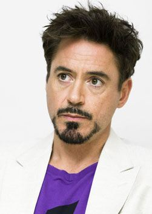
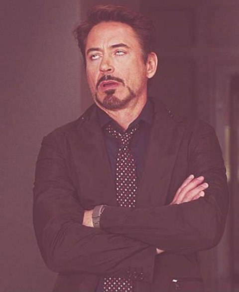
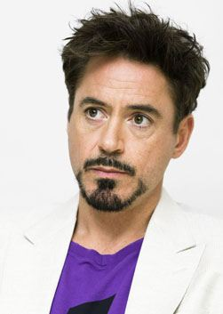
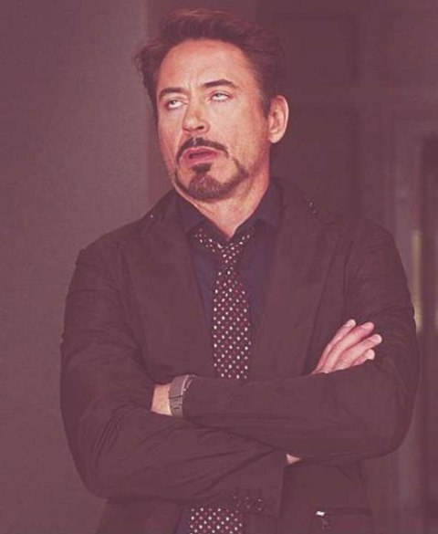

Досье
 



Ро́берт Джон Да́уни — мла́дший (англ. Robert John Downey Jr.; род. 4 апреля 1965 года, Нью-Йорк) — американский актёр, продюсер и музыкант. Лауреат премий «Золотой глобус» (2001, 2010), BAFTA (1993), «Премии Гильдии киноактёров США» (2001) и «Сатурн» (1994, 2009, 2014), номинант на премии «Оскар» (1993, 2009) и «Эмми» (2001). Начал актёрскую карьеру ещё ребёнком, сыграв в фильме своего отца «Загон» (1970). Ближе к началу 1990-х Дауни становится востребованным актёром, в частности, благодаря ролям в фильмах «Эйр Америка» (1990), «Большая пена» (1991) и «Прирождённые убийцы» (1994). Наиболее известной и удачной ролью Роберта в XX веке считается роль Чарли Чаплина в одноимённом байопике Ричарда Аттенборо, принёсшая ему премию BAFTA и первую номинацию на «Оскар». После череды громких скандалов в конце 1990-х, связанных с наркотической зависимостью и тюремным сроком, Дауни вернулся на экраны с второстепенной ролью в телесериале «Элли Макбил», принёсшей ему первый «Золотой глобус» в 2001 году. Далее последовали роли в ряде успешных картин, среди которых — «Готика» (2003), «Поцелуй навылет» (2005) и «Зодиак» (2007). В 2008 году выходят «Солдаты неудачи», принёсшие Дауни вторую номинацию на «Оскар», и «Железный человек», положивший начало масштабной медиафраншизы под названием «Кинематографическая вселенная Marvel». В последнем Дауни исполнил роль супергероя Тони Старка / Железного человека — эту же роль он вскоре повторил в фильмах «Железный человек 2» (2010), «Мстители» (2012), «Железный человек 3» (2013), «Мстители: Эра Альтрона» (2015), «Первый мститель: Противостояние» (2016) и «Человек-паук: Возвращение домой» (2017). Также известен благодаря роли Шерлока Холмса в фильмах Гая Ричи «Шерлок Холмс» (2009) и «Шерлок Холмс: Игра теней» (2011). За роль в первой части был удостоен второго «Золотого глобуса». В 2013, 2014 и 2015 году Дауни возглавил список самых высокооплачиваемых актёров Голливуда по версии Forbes.